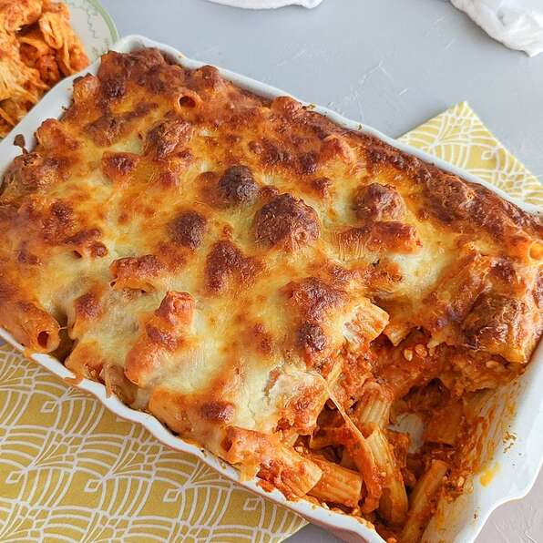

<!DOCTYPE html>
<html lang="en">
    <meta charset="UTF-8">
    <title>Meatball Pasta Bake</title>
</html>

<body>
    <a href="../index.html">Back Home</a>
    <h1>Meatball Pasta Bake</h1>
    
    <h2>Ingredients</h2>
    <p>
    <br> 1 (16 ounce) package ziti pasta
    <br>1 ½ pounds frozen cooked meatballs, thawed
    <br>2 (28 ounce) jars prepared marinara sauce
    <br>1 cup ricotta cheese
    <br>1 teaspoon Italian seasoning
    <br>1 teaspoon garlic powder
    <br>3 cups shredded mozzarella cheese, divided
    <br>⅔ cup grated Parmesan cheese, divided 
    </p>
    <h1>Directions</h1>
    <h4>Step 1</h4>
    <br>Bring a large pot of lightly salted water to a boil. Add ziti and cook, stirring occasionally, about 3 minutes less than the package instructions, about 8 minutes. Drain pasta.
    <h4>Step 2</h4>
    <br>Preheat the oven to 350 degrees F (175 degrees C). Lightly grease a 13x9 inch baking dish.
    <h4>Step 3</h4>
    <br>Heat oil in a skillet over medium heat and cook meatballs until browned on all sides, about 5 minutes. Add marinara sauce and ricotta cheese; mix to combine. Add cooked pasta and mix to combine. Season with Italian seasoning and garlic powder.
    <h4>Step 4</h4>
    <br>Cover the bottom of the prepared baking dish with a layer of sauce without meatballs. Sprinkle 1 cup mozzarella cheese on top. Add another layer of sauce with meatballs on top and sprinkle with 1/3 cup Parmesan cheese. Add another layer of 1 cup mozzarella cheese. Add the rest of the sauce and meatball mixture on top, followed by remaining 1 cup mozzarella cheese and 1/3 cup Parmesan cheese. Cover baking dish with aluminum foil.
    <h4>Step 5</h4>
    <br>Bake in the preheated oven until cheese is melted, 20 to 30 minutes.
    <h4>Step 6</h4>
    <br>Remove foil and bake until cheese starts to turn golden brown, 10 to 20 minutes. Enjoy!
</body>